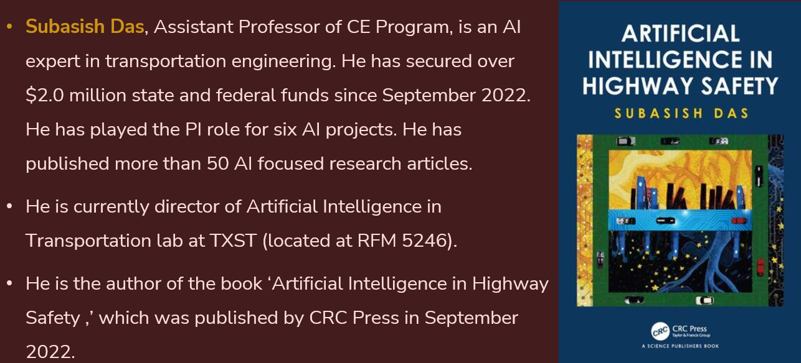
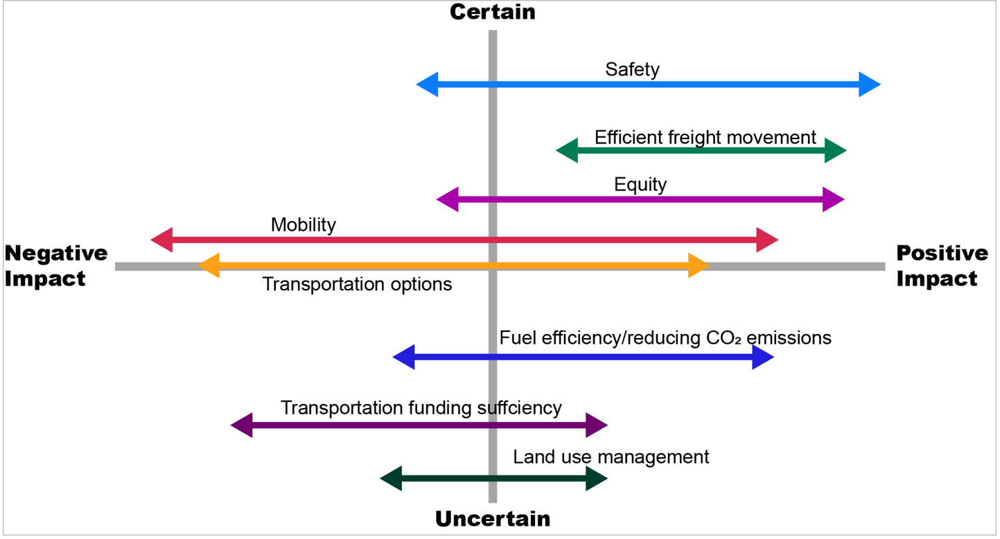
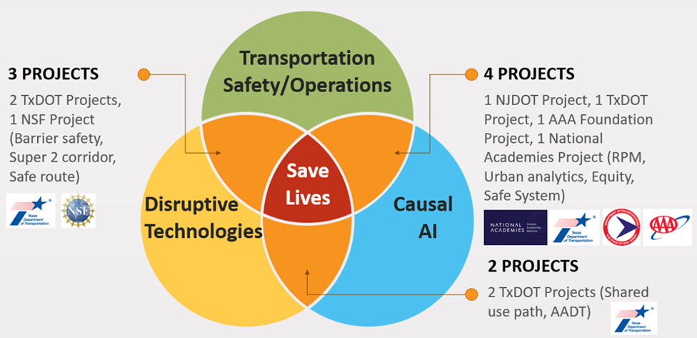
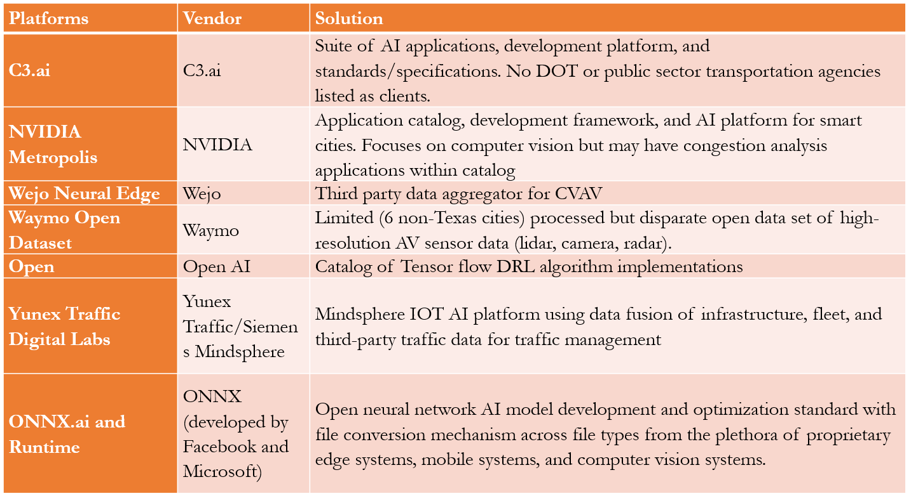
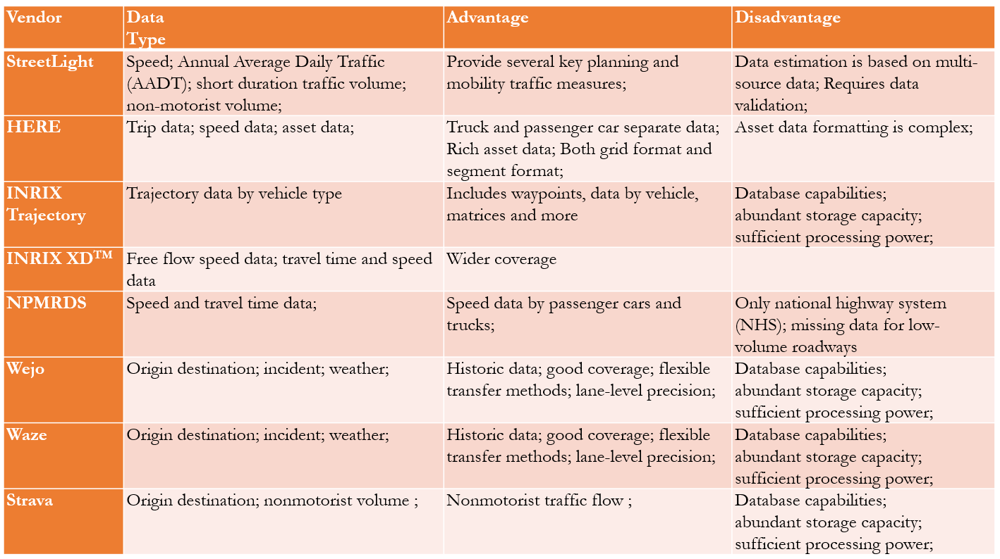
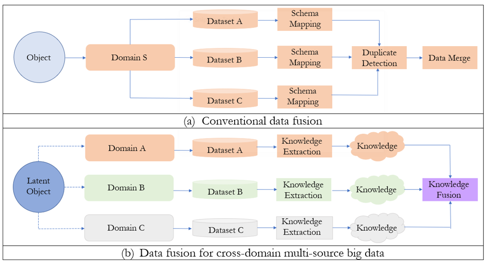

AI in Transportation (AIT) Lab Smart Mobility Projects
About Me

Overview
- Projects on Disruptive Technologies:
- Artificial intelligence
- Big data and digitization
- Internet of Things (IoT)
- Connected and automated vehicles (CAV) technologies
- Mobility as a Service (MaaS)/Mobility on Demand (MOD)
- Urban Air Mobility
Research Impact


Infrastructure Readiness
- Original equipment manufacturers (OEMs) and ADS developers often maintain that no infrastructure enablers (except clean lane markings) are needed to achieve full AV deployment.
- For this reason, currently deployed AVs are limited to narrowly defined ODDs and may require human intervention at certain conditions.
- CAV ready infrastructure could speed the introduction of CAVs and ensure their safe operation under a wide variety of environmental conditions.

How to make Infrastructure Ready for Disruptive Technologies
- Understand trends and patterns
- Conduct technology and associated risk assessment
- Adopt risk mitigation strategies
- Invest, update, and foster innovation
Key Data Technologies
- Artificial intelligence
- Big data and digitization
- Multi-source data fusion
- Cloud computing
- Fog computing and quantum computing
Current Projects

AIT Lab's Major AI Projects (as PI)
- NCHRP 17-113: Incorporating Safe System Approach into the NCHRP Report 500 Series. National Acamedies (National Academies, $700K, 2023-2026)
- Increasing Equity in Traffic Safety, (AAA, $60K, 2023-2024)
- SafeR: AI-based Safe Routing Tool (UTC+NSF, $400K, 2023-2024)
- Develop a Real-time Decision Support Tool for Urban Roadway Safety Improvement (TxDOT, $470K, 2023-2025)
- Leveraging AI Techniques to Detect, Forecast, and Manage Freeway Congestion (TxDOT, $280K, 2021-2023)
- Develop a Real-time Decision Support Tool for Rural Roadway Safety Improvement (TxDOT, $300K, 2019-2022)
- Safety Data Initiative Rural Pilot Project (USDOT, $230K, 2018-2021)
AI Platforms

Data Vendors


Data Fusion

Data Fusion


USDOT Safety Data Initiative Rural Pilot Project
- Three States: North Carolina, Washington, and Ohio
- Three Databases
- Highway Safety Information System (HSIS)
- Highway Performance Monitoring System (HPMS)
- National Performance Management Research Data Set (NPMRDS)
Decision Support Tool
Live app link: https://ruralspeedsafety.shinyapps.io/rss_sdi
TxDOT Rural Speed Safety Project
- Four Major Databases
- Road inventory data from RHiNO
- Traffic crash data from CRIS
- National Performance Management Research Data Set (NPMRDS)
- NOAA Dataset
- Years: 2016-2020
- Tool: Static
Decision Support Tool
Live app link: https://ruralspeedsafety.shinyapps.io/0_7051Tool_v2/
TxDOT AI-based Freeway Congestion Project
- Four Major Databases
- Road inventory data from RHiNO
- Traffic crash data from CRIS
- INRIX XD and Wejo CV data
- Waze and StreetLight Dataset
- Years: 2017-2022
- Conducted short version of Current IAC's Task 2-4
Interactive Tool
Live app link: https://txdot.shinyapps.io/0_7131/
TxDOT Urban Speed Safety Project (Ongoing)
- Six Major Databases
- Road inventory data from RHiNO
- Traffic crash data from CRIS
- NPMRDS
- INRIX XD and Wejo CV data
- NOAA Dataset
- Smart Location Database (SLD)
- Years: 2018-2023
- Tool: Data streaming available through cloud computing
Data Streaming

SafeR: AI-based Safe Routing Tool
- N Databases
- Road inventory
- Traffic crash data
- Demographic Data: SLD, Census, Social Vulnerability Data
- Vendor: StreetLight, INRIX XD, Replica, Waze and Wejo
- Years: 2018-2024